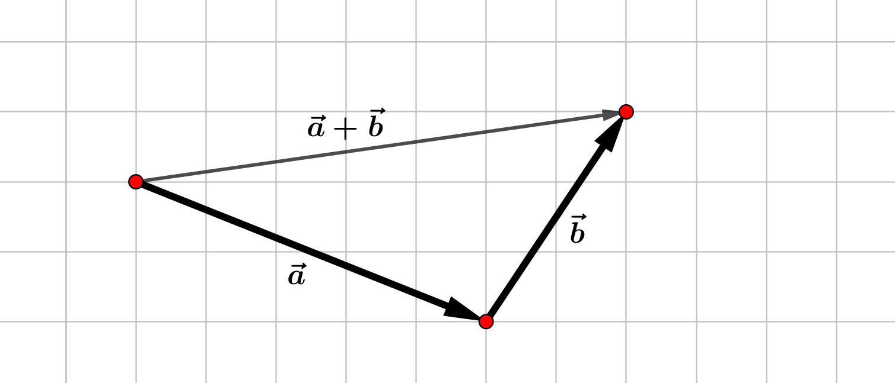
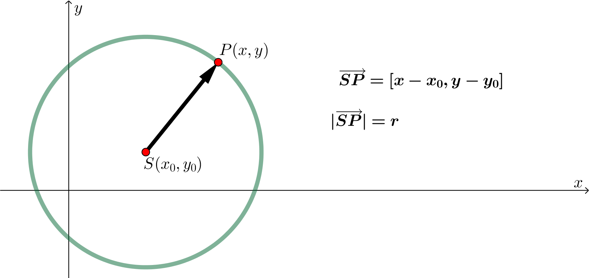
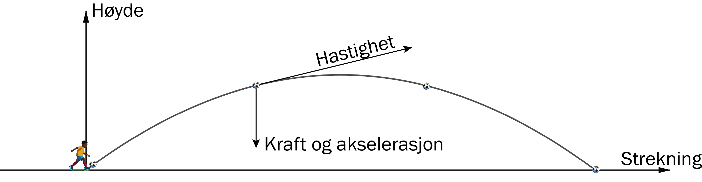
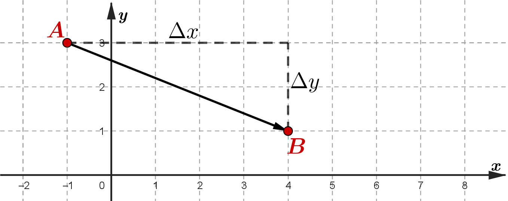
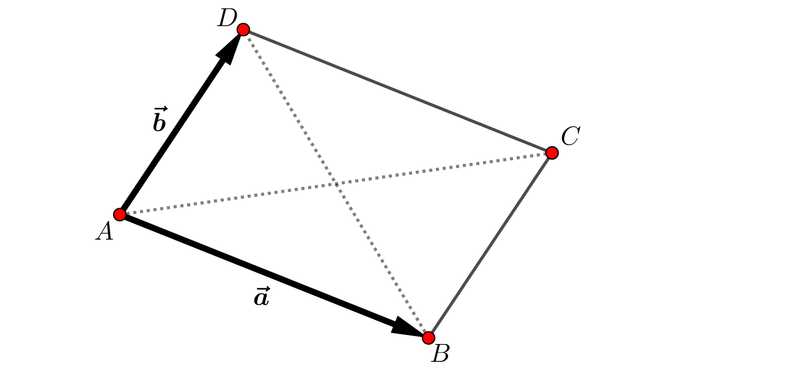
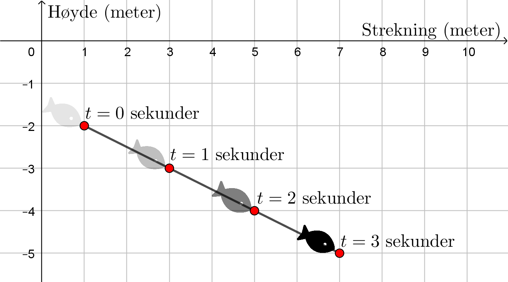
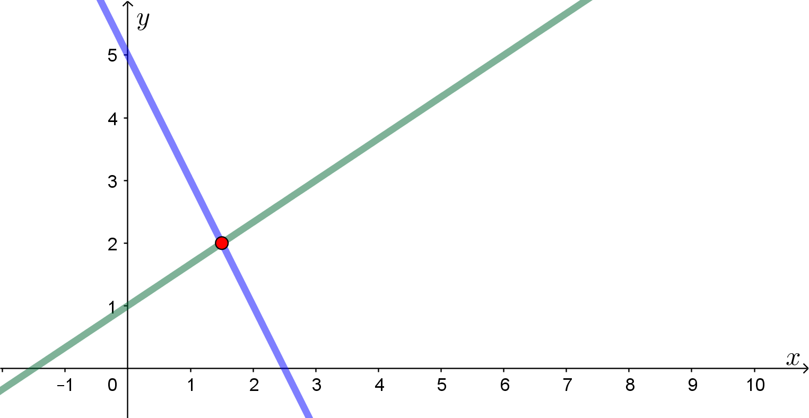
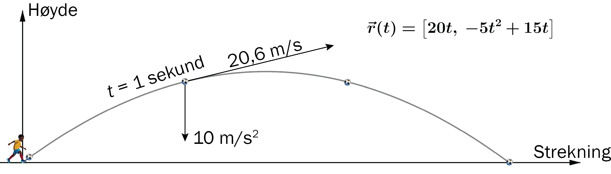
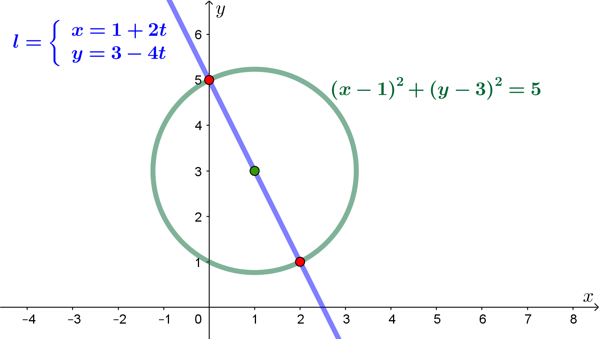

Du skal ha kompetanse om


En vektor har både en størrelse (lengde) og retning.
Eksempler på vektorer er hastighet, kraft og akselerasjon.

En vektor forteller oss hvor langt vi går i \(x\)- og \(y\)-retning.
Bestem vektoren og lengden av vektoren mellom \(A(-1, 3)\) og \(B(4, 1)\).

Vi leser av forlytningen for å bestemme vektoren:
\[ \overrightarrow{AB} = [\Delta x, \Delta y] = [5 , -2] \]Vi bruker pytagoras for å bestemme lengden av vektoren:
\[ |\overrightarrow{AB}| = \sqrt{5^2 + 2^2} = \sqrt{29} \]En størrelse som ikke er en vektor kaller vi en skalar. Lengden av vektoren er et eksempel på en skalar-størrelse.
Gitt to vektorer \(\vec{a}=[5,-2]\) og \(\vec{b}=[2,3]\). Bestem \(\vec{a}+\vec{b}\).
Vis at diagonalene i et parallellogram skjærer hverandre på midten.

Hvis vi lar \(M\) være midtpunktet på \(AC\), så er \( \overrightarrow{AM} = \frac{1}{2} \overrightarrow{AC} = \frac{1}{2} \left( \vec{a} + \vec{b}\right) \)
Hvis vi lar \(N\) være midtpunktet på \(BD\), så er
\[ \overrightarrow{AN} = \overrightarrow{AB} + \frac{1}{2} \overrightarrow{BD} = \vec{a} + \frac{1}{2} \left( - \vec{a} + \vec{b} \right) = \frac{1}{2} \left( \vec{a} + \vec{b}\right) = \overrightarrow{AM} \]To vektorer \(\vec{u}=[u_x,u_y]\) og \(\vec{v}=[v_x,v_y]\) er parallelle dersom
\[ \frac{\Delta y}{\Delta x} = \frac{u_y}{u_x} = \frac{v_y}{v_x} \]To parallelle vektorer kan skrives som \(\vec{u}=k\cdot\vec{v}\), hvor \(k\) er et tall.
Dersom \(\vec{u}\) og \(\vec{v}\) er parallelle, skriver vi \(\vec{u}\parallel\vec{v}\).
\(\vec{v}=[3,6]\parallel\vec{u}=[1,2]\) fordi \(\vec{v}=3\vec{u}\).
Bestem \(x\) slik at \(\vec{u}=[1,-2]\parallel\vec{v}=[x,3]\).
I et parallellogram \(ABCD\) er \(A(1,2)\), \(B(3,-1)\) og \(C(2,4)\).
Bestem koordinatene til \(D\).
Vi bruker at \(\overrightarrow{AD}=\overrightarrow{BC}\).
\[\begin{aligned} \overrightarrow{AD}&=\overrightarrow{BC}\\ [x-1,y-2]&=[-1,5] \end{aligned}\]Dermed ser vi at \(D(x,y)=D(0,7)\).
Skalarprodukt er lengden av den ene vektoren \(\vec{a}\) multiplisert med projeksjonen av den andre vektoren \(\vec{b}\) ned på den første:
På vektorform regner vi skalarproduktet slik:
\[ [a_x,a_y]\cdot[b_x,b_y]=a_x\cdot b_x+a_y\cdot b_y \]Bestem vinkelen mellom vektorene \([3,1]\) og \([-3,3]\).
En parameterframstilling er en måte å fremstille en linje på ved hjelp av en parameter, \(t\). Som regel representerer \(t\) tid.
En fisk svømmer på skrått nedover. Etter \(t\) sekunder er posisjonen
\[\begin{cases}x=1+2t\\y=-2-t\end{cases}\]Enhetene på aksene er meter, \(x\) gir posisjonen i horisontal (vanrett) retning og \(y\) gir posisjonen i vertikal retning.
Beskriv bevegelsen.
Vi setter inn \(t=0\), \(1\), \(2\) og \(3\) og får posisjonen etter 0, 1, 2 og 3 s.

Farten til fisken er den deriverte av posisjonen:
\[x'(t)=2\;\;\;,\;\;\;y'(t)=-1\]Dette gir \(\vec{v}=[2,-1]\) og \(|\vec{v}|=\sqrt{2^2+(-1)^2}=\sqrt{5}\).
Fisken svømmer på skrått nedover nedover med farten \(\sqrt{5}\) m/s.
To linjer er gitt ved
\[l=\begin{cases}x=1+2t\\y=3-4t\end{cases}\;\;\;\text{og }\;\;\;m=\begin{cases}x=3t\\y=1+2t\end{cases}\]Bestem skjæringspunktet mellom linjene.
Linjene skjærer hverandre når \(x\)- og \(y\)-koordinatene er like. Det er ikke sikkert linjene er i samme punkt for samme \(t\)-verdi. Vi bytter derfor navn fra \(t\) til \(s\) for linja \(m\), og får likningssettet
\[\begin{aligned}1+2t&=3s\\3-4t&=1+2s\end{aligned}\]For å løse likningssettet kan vi finne et uttrykk for \(t\) fra den øverste likningen
\[\frac{3s-1}{2}=t\]som satt inn i den nederste likningen gir
\[\begin{aligned}1+2s&=3-4\cdot\left(\frac{3s-1}{2}\right)\\1+2s&=3-6s+2\\8s&=4\\s&=\frac{1}{2}\end{aligned}\]Vi setter inn i uttrykket for \(m\) og får punktet \(\left(\frac{3}{2},2\right)\)

Kurver kan både fremstilles som parameterfremstillinger og som vektorfunksjoner:
\[\text{Parameterfremstilling: }l=\begin{cases}x(t)\\y(t)\end{cases}\;\;\;\;\text{ Vektorfunksjon: }\vec{r}(t)=[x(t),y(t)]\]Fartsvektoren er gitt ved \(\vec{v}(t)=\vec{r}'(t)\).
Akselerasjonsvektoren er gitt ved \(\vec{a}(t)=\vec{v}'(t)=\vec{r}''(t)\).
En ball sparkes på skrått. Etter \(t\) sekunder er posisjonen til ballen gitt ved vektorfunksjonen
\[\vec{r}(t)=[20t,-5t^2+15t]\]Enhetene på aksene er meter.
Bestem posisjonen, farten og akselerasjonen etter ett sekund.
Banefarten etter ett sekund er \(\sqrt{20^2+5^2}\) m/s = \(\underline{\sqrt{425}\text{ m/s}}\) og størrelsen til akselerasjonen er \(\underline{\text{10 m/s}^2}\).

Avstanden fra sentrum \(S(x_0,y_0)\) av en sirkel til et tilfeldig punkt \(P(x,y)\) på sirkelen er lik radien til sirkelen:
Lengden \(|\overrightarrow{SP}|=r\) gir likningen for en sirkel:
\[\begin{aligned}\sqrt{(x-x_0)^2+(y-y_0)^2}&=r\\(x-x_0)^2+(y-y_0)^2&=r^2\end{aligned}\]En sirkel har radius 3 og sentrum i punktet \(S(2,1)\). Bestem skjæringspunktene mellom \(x\)-aksen og sirkelen.
Likningen for sirkelen er
\[(x-2)^2+(y-1)^2=3^2\]Sirkelen skjærer \(x\)-aksen når \(y=0\),
\[\begin{aligned}(x-2)^2+(0-1)^2&=3^2\\(x-2)^2+1&=9\\x-2&=\pm\sqrt{8}\\x&=\underline{2\pm\sqrt{8}}\end{aligned}\]En linje og en sirkel er gitt ved
\[l=\begin{cases}x=1+2t\\y=3-4t\end{cases}\;\;\;\text{ og }\;\;\;(x-1)^2+(x-3)^2=5\]Bestem skjæringspunktene mellom linja og sirkelen.
Vi setter \(x\) og \(y\) fra linja inn i sirkelen,
\[\begin{aligned}(1+2t-1)^2+(3-4t-3)^2&=5\\(2t)^2+(-4t)^2&=5\\4t^2+16t^2&=5\\20t^2&=5\\t^2&=\frac{1}{4}\\t&=\pm\frac{1}{2}\end{aligned}\]For å finne skjæringspunktene setter vi \(t\)-verdiene inn i uttrykket for \(l\),
\[l=\begin{cases}x=1+2\cdot\left(\pm\frac{1}{2}\right)=2\;\;\vee\;\;0\\y=3-4\cdot\left(\pm\frac{1}{2}\right)=1\;\;\vee\;\;5\end{cases}\]Skjæringspunktene er (2, 1) og (0, 5).
